data(banco.2pl, package = 'minicursoTRI2025')2 Análise de itens dicotômicos
2.1 Preparação
Importar banco
Nome das variáveis do banco
names(banco.2pl) [1] "Item_1" "Item_2" "Item_3" "Item_4" "Item_5" "Item_6" "Item_7"
[8] "Item_8" "Item_9" "Item_10" "grupo" São 10 itens e a variável de grupo.
Confirmar que os itens são dicotômicos
table(banco.2pl$Item_1)
0 1
368 132 Função apply para toda a tabela (quando usa 2, a função percorre cada coluna). Retirar a coluna 11, pois se refere ao grupo
apply(banco.2pl[,-11], 2, table) Item_1 Item_2 Item_3 Item_4 Item_5 Item_6 Item_7 Item_8 Item_9 Item_10
0 368 311 409 225 157 253 300 294 364 346
1 132 189 91 275 343 247 200 206 136 154Confirmar os grupos
table(banco.2pl$grupo)
G1 G2
250 250 2.2 Análise inicial
2.2.1 Calibração inicial
Calibrar os itens no modelo logístico de dois parâmetros
fit.2pl <- mirt(data = banco.2pl[,-11], model = 1, itemtype = '2PL')Verificar os parâmetros dos itens
coef(fit.2pl)$Item_1
a1 d g u
par 1.096 -1.264 0 1
$Item_2
a1 d g u
par 1.214 -0.641 0 1
$Item_3
a1 d g u
par 2.169 -2.529 0 1
$Item_4
a1 d g u
par 3.361 0.494 0 1
$Item_5
a1 d g u
par 1.2 1 0 1
$Item_6
a1 d g u
par 2.252 -0.035 0 1
$Item_7
a1 d g u
par 0.999 -0.489 0 1
$Item_8
a1 d g u
par 1.853 -0.557 0 1
$Item_9
a1 d g u
par 1.408 -1.336 0 1
$Item_10
a1 d g u
par 2.456 -1.507 0 1
$GroupPars
MEAN_1 COV_11
par 0 1Verificar os parâmetros dos itens de forma simplificada
coef(fit.2pl, simplify = TRUE)$items
a1 d g u
Item_1 1.096 -1.264 0 1
Item_2 1.214 -0.641 0 1
Item_3 2.169 -2.529 0 1
Item_4 3.361 0.494 0 1
Item_5 1.200 1.000 0 1
Item_6 2.252 -0.035 0 1
Item_7 0.999 -0.489 0 1
Item_8 1.853 -0.557 0 1
Item_9 1.408 -1.336 0 1
Item_10 2.456 -1.507 0 1
$means
F1
0
$cov
F1
F1 1Verificar os parâmetros dos itens (dificuldade em vez do intercepto) de forma simplificada
coef(fit.2pl, IRTpars = TRUE, simplify = TRUE)$items
a b g u
Item_1 1.096 1.153 0 1
Item_2 1.214 0.528 0 1
Item_3 2.169 1.166 0 1
Item_4 3.361 -0.147 0 1
Item_5 1.200 -0.833 0 1
Item_6 2.252 0.016 0 1
Item_7 0.999 0.489 0 1
Item_8 1.853 0.300 0 1
Item_9 1.408 0.949 0 1
Item_10 2.456 0.613 0 1
$means
F1
0
$cov
F1
F1 1Armazenar os parâmetros em um objeto
pars <- data.frame(coef(fit.2pl, IRTpars = TRUE, simplify = TRUE)$items)
pars a b g u
Item_1 1.0964786 1.15287223 0 1
Item_2 1.2139519 0.52767356 0 1
Item_3 2.1693402 1.16583347 0 1
Item_4 3.3605669 -0.14690677 0 1
Item_5 1.2002131 -0.83330287 0 1
Item_6 2.2523416 0.01564711 0 1
Item_7 0.9988899 0.48930468 0 1
Item_8 1.8529569 0.30034917 0 1
Item_9 1.4080007 0.94908413 0 1
Item_10 2.4561458 0.61337267 0 12.2.2 Gráficos
Curva de informação do teste
plot(fit.2pl, type = 'info')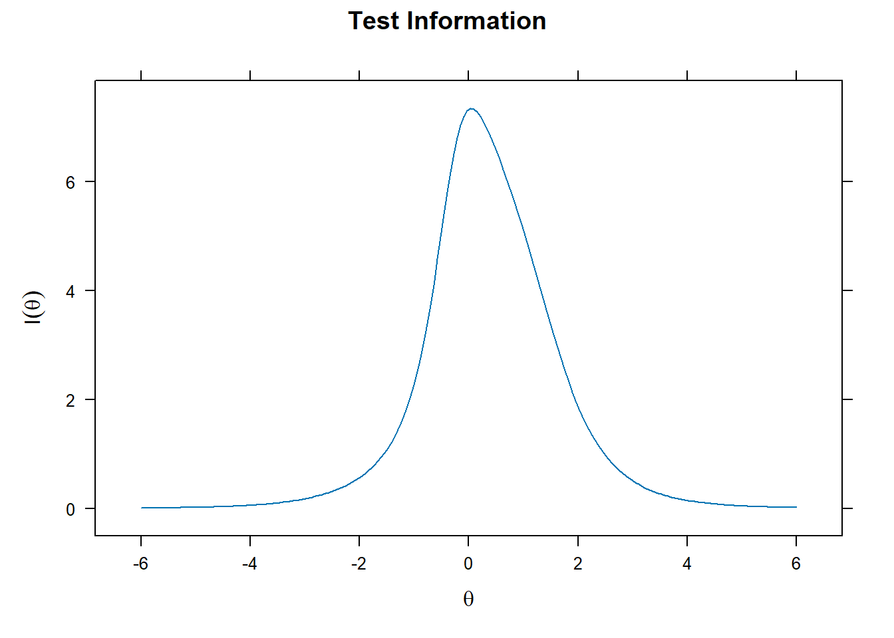
Confiabilidade do teste em função do escore
plot(fit.2pl, type = 'rxx')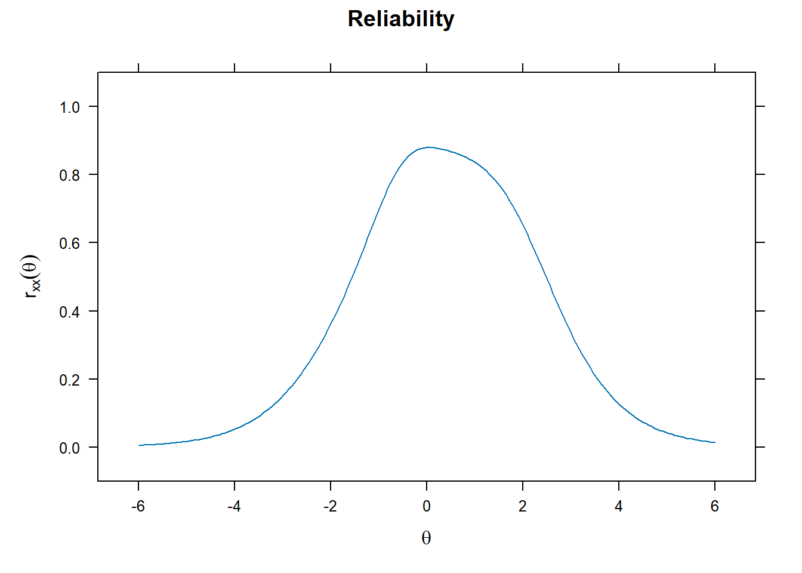
Erro padrão de medida em função do escore
plot(fit.2pl, type = 'SE')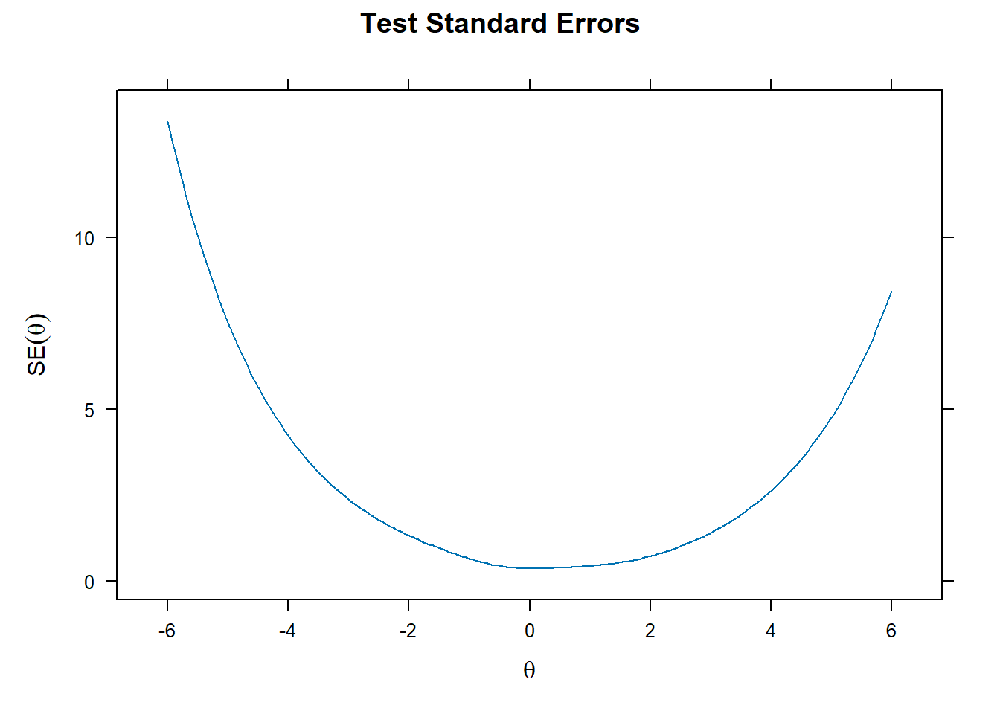
Informação do teste e erro padrão
plot(fit.2pl, type = 'infoSE')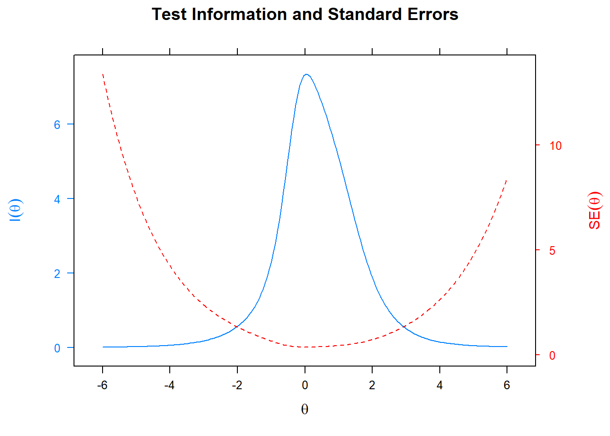
Curva de informação de cada item
plot(fit.2pl, type = 'infotrace')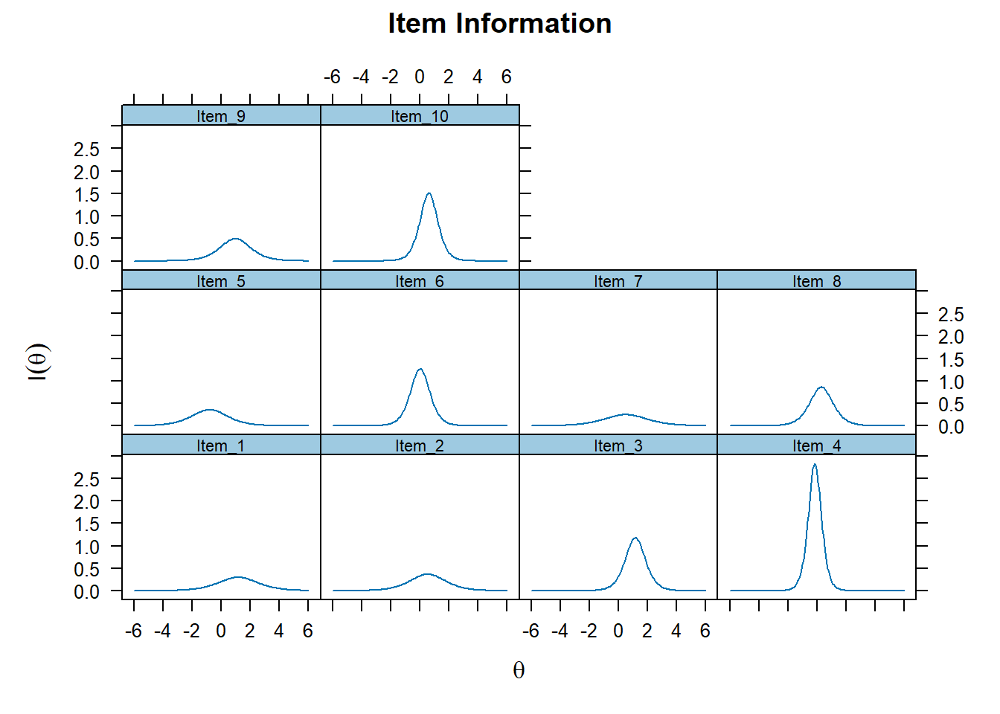
Curva característica de cada item
plot(fit.2pl, type = 'trace')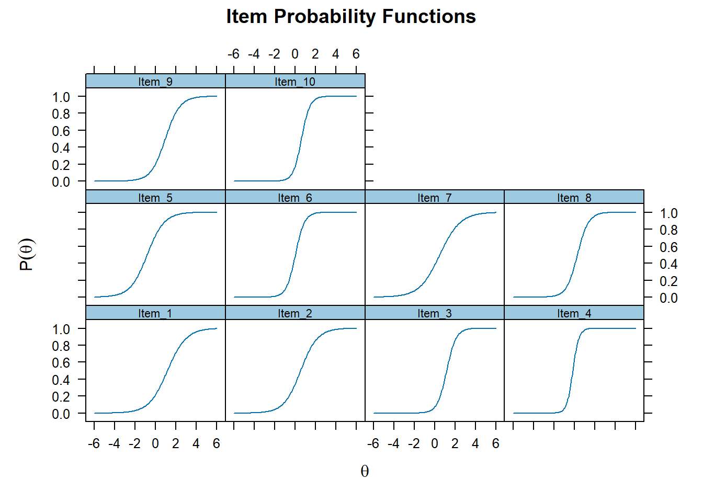
Gráficos de cada item
itemplot(fit.2pl, 1, 'info')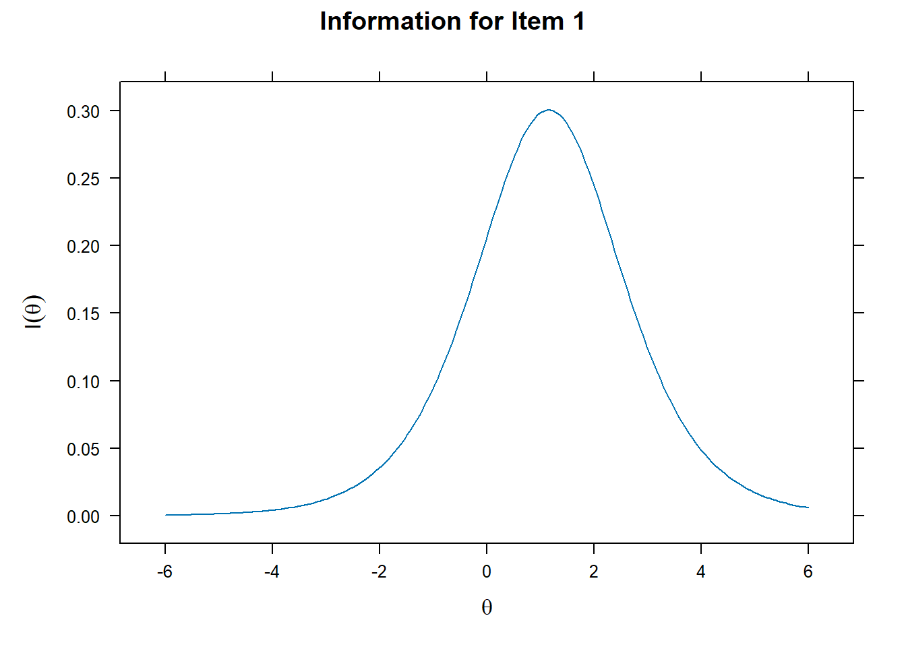
itemplot(fit.2pl, 1, 'SE')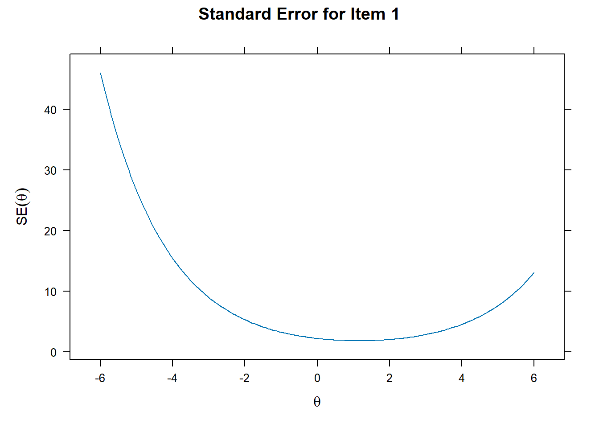
itemplot(fit.2pl, 1, 'trace')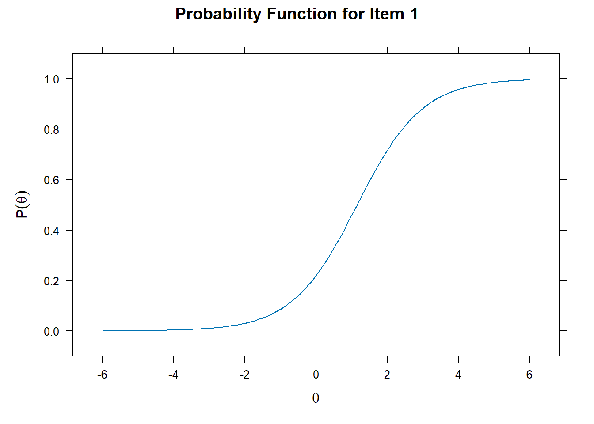
itemplot(fit.2pl, 1, 'infoSE')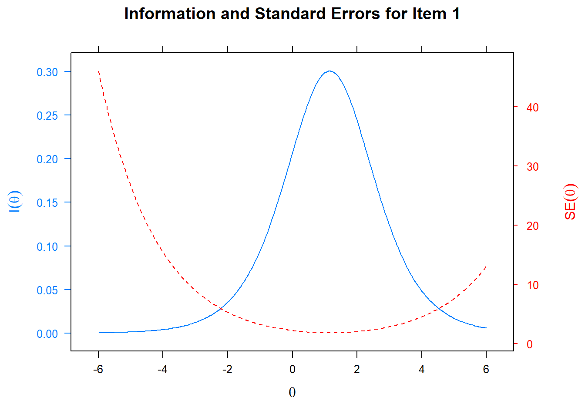
itemplot(fit.2pl, 1, 'infotrace')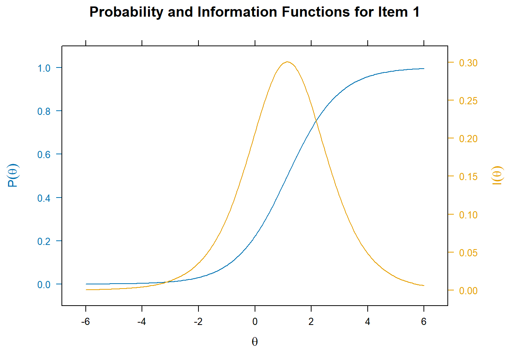
Calcular o escore dos sujeitos e o erro de medida
escore.2pl <- fscores(object = fit.2pl, full.scores.SE = TRUE)
head(escore.2pl) F1 SE_F1
[1,] -0.6977952 0.4624258
[2,] 0.4134812 0.3659014
[3,] 0.3791968 0.3645549
[4,] -1.3941338 0.6270417
[5,] 0.4348772 0.3668314
[6,] 0.2478491 0.36119422.2.3 Análise de DIF
Calibrar usando a função para múltiplos grupos
fit.2pl.mg <- multipleGroup(data = banco.2pl[,-11],
model = 1,
group = banco.2pl$grupo,
itemtype = '2PL',
invariance = c('free_mean',
'free_var',
colnames(banco.2pl)))pars.mg <- coef(fit.2pl.mg, IRTpars = TRUE, simplify = TRUE)
pars.mg$G1
$items
a b g u
Item_1 1.056 1.296 0 1
Item_2 1.197 0.638 0 1
Item_3 2.074 1.312 0 1
Item_4 3.249 -0.055 0 1
Item_5 1.155 -0.767 0 1
Item_6 2.160 0.114 0 1
Item_7 0.960 0.607 0 1
Item_8 1.768 0.411 0 1
Item_9 1.349 1.086 0 1
Item_10 2.364 0.734 0 1
$means
F1
0
$cov
F1
F1 1
$G2
$items
a b g u
Item_1 1.056 1.296 0 1
Item_2 1.197 0.638 0 1
Item_3 2.074 1.312 0 1
Item_4 3.249 -0.055 0 1
Item_5 1.155 -0.767 0 1
Item_6 2.160 0.114 0 1
Item_7 0.960 0.607 0 1
Item_8 1.768 0.411 0 1
Item_9 1.349 1.086 0 1
Item_10 2.364 0.734 0 1
$means
F1
0.198
$cov
F1
F1 1.136Função RMSD_DIF no pacote mirt (após a aula, estude a ajuda da função)
dif.rmsd <- RMSD_DIF(pooled_mod = fit.2pl.mg)dif.rmsd$G1
P.0 P.1
Item_1 0.023 0.023
Item_2 0.167 0.167
Item_3 0.019 0.019
Item_4 0.010 0.010
Item_5 0.020 0.020
Item_6 0.025 0.025
Item_7 0.045 0.045
Item_8 0.050 0.050
Item_9 0.016 0.016
Item_10 0.033 0.033
$G2
P.0 P.1
Item_1 0.029 0.029
Item_2 0.161 0.161
Item_3 0.016 0.016
Item_4 0.015 0.015
Item_5 0.022 0.022
Item_6 0.027 0.027
Item_7 0.019 0.019
Item_8 0.048 0.048
Item_9 0.029 0.029
Item_10 0.017 0.017Conclusão: o Item_2 possui DIF.
2.3 Análise final
2.3.1 Calibração final
Calibrar deixando o Item_2 e o Item_8 livres entre os grupos
fit.2pl.mg2 <- multipleGroup(data = banco.2pl[,-11],
model = 1,
group = banco.2pl$grupo,
itemtype = '2PL',
invariance = c('free_mean',
'free_var',
colnames(banco.2pl)[-c(2)]))Parâmetros da nova calibração
pars.mg2 <- coef(fit.2pl.mg2, IRTpars = TRUE, simplify = TRUE)
pars.mg2$G1
$items
a b g u
Item_1 1.042 1.261 0 1
Item_2 1.633 1.201 0 1
Item_3 2.078 1.269 0 1
Item_4 3.186 -0.103 0 1
Item_5 1.152 -0.819 0 1
Item_6 2.168 0.067 0 1
Item_7 0.962 0.560 0 1
Item_8 1.790 0.363 0 1
Item_9 1.350 1.041 0 1
Item_10 2.329 0.693 0 1
$means
F1
0
$cov
F1
F1 1
$G2
$items
a b g u
Item_1 1.042 1.261 0 1
Item_2 1.110 -0.138 0 1
Item_3 2.078 1.269 0 1
Item_4 3.186 -0.103 0 1
Item_5 1.152 -0.819 0 1
Item_6 2.168 0.067 0 1
Item_7 0.962 0.560 0 1
Item_8 1.790 0.363 0 1
Item_9 1.350 1.041 0 1
Item_10 2.329 0.693 0 1
$means
F1
0.102
$cov
F1
F1 1.184Análise de DIF após nova calibração (lembrando que o Item_2 está livre)
dif.rmsd <- RMSD_DIF(pooled_mod = fit.2pl.mg2)dif.rmsd$G1
P.0 P.1
Item_1 0.028 0.028
Item_2 0.019 0.019
Item_3 0.012 0.012
Item_4 0.023 0.023
Item_5 0.015 0.015
Item_6 0.011 0.011
Item_7 0.046 0.046
Item_8 0.038 0.038
Item_9 0.011 0.011
Item_10 0.030 0.030
$G2
P.0 P.1
Item_1 0.032 0.032
Item_2 0.028 0.028
Item_3 0.010 0.010
Item_4 0.021 0.021
Item_5 0.016 0.016
Item_6 0.013 0.013
Item_7 0.015 0.015
Item_8 0.038 0.038
Item_9 0.029 0.029
Item_10 0.022 0.0222.3.2 Gráficos
Curva de informação do teste
plot(fit.2pl.mg2, type = 'info')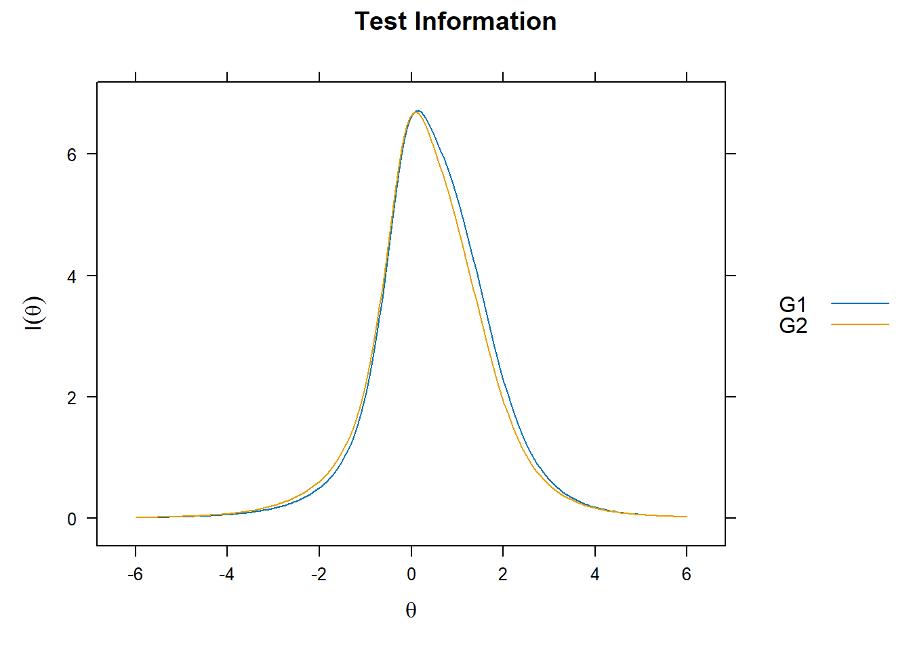
Erro padrão de medida em função do escore
plot(fit.2pl.mg2, type = 'SE')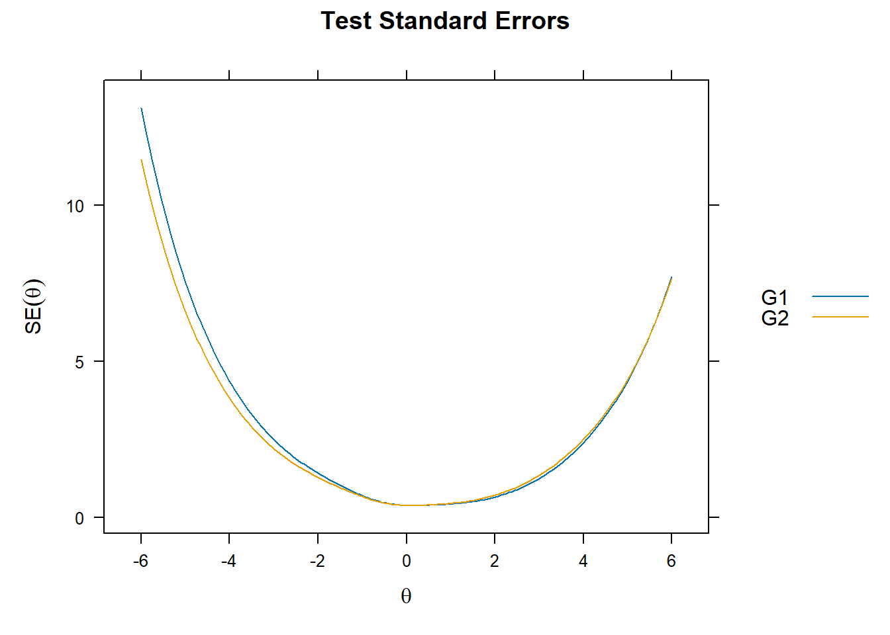
Curva de informação de cada item
plot(fit.2pl.mg2, type = 'infotrace')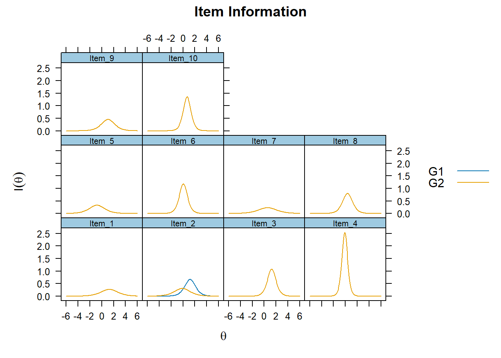
Curva característica de cada item
plot(fit.2pl.mg2, type = 'trace')
Gráficos de cada item
itemplot(fit.2pl.mg2, 1, 'info')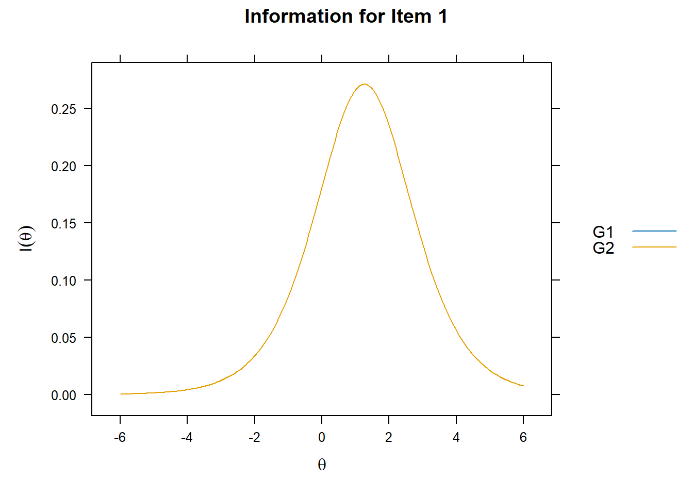
itemplot(fit.2pl.mg2, 1, 'trace')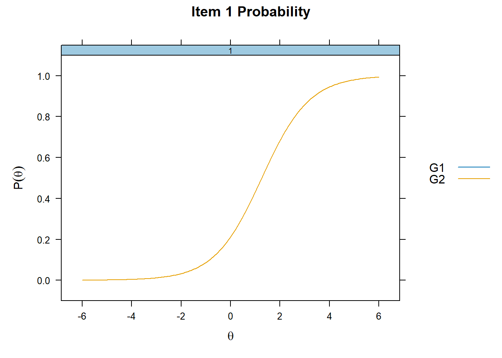